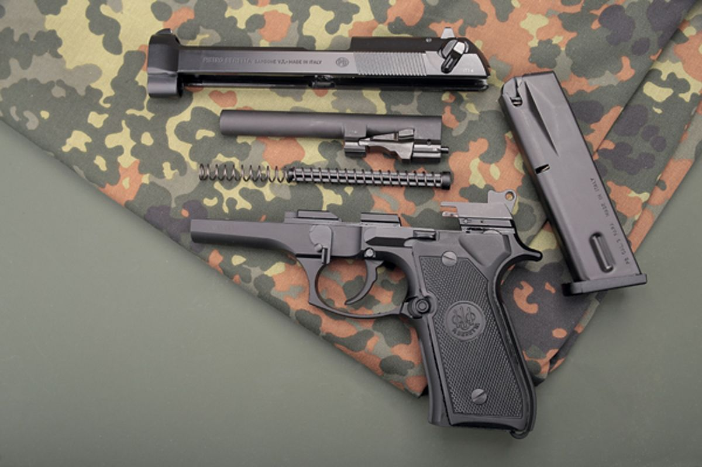
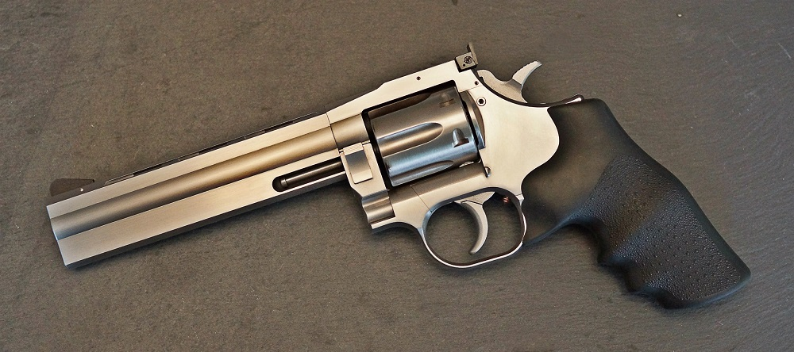

Plynovky sú poháňané stlačeným plynom (napr. Green Gas HFC134a alebo CO2), ktorý sa plní podobným spôsobom, ako plyn do zapaľovača – cez ventil do zásobníka. Delia sa na blowbackové a neblowbackové – systém blowback zabezpečuje spätný chod záveru zbrane (tzv. kopanie zbrane) a zároveň automatické nabíjanie zbrane po každom výstrele – zbraň sa teda nemusí naťahovať pred každým výstrelom. Zbrane bez systému blowback majú jednoduchší mechanizmus, pevný záver a nemajú prudký spätný náraz.
Tu sa odráža i cena – sú priemerne o polovicu lacnejšie: okolo 100 – 140 €, cena za blowbackové zbrane sa pohybuje od 140 do 260 €. Pri systéme blowback je časť plynu odvedená na spätný chod záveru, preto aj celková spotreba plynu je približne dvojnásobná oproti zbraniam bez blowbacku. Realistickosť zbraní s blowbackom je azda najvernejšia a najviac sa blíži zážitku zo streľby zo skutočnej zbrane. Pre zbrane s kovovými mechanizmami je možné použiť aj výkonnejší plyn HFC22. Využiteľný dostrel plynoviek je 20 – 30 m, výhodou je možnosť korekcie výsledku ďalším výstrelom. Energia strely je 0,7 – 0,9 J.
K najkvalitnejším patria zbrane od firiem Tokyo Marui a KSC, medzi najfrekventovanejšie modely Tokyo Marui Beretta 92F, či Tactical Master a KSC Glock 18c, ktorý je dokonca vybavený prepínačom na plnoautomatickú streľbu. Samostatnou kapitolou sú plynové revolvery.
 